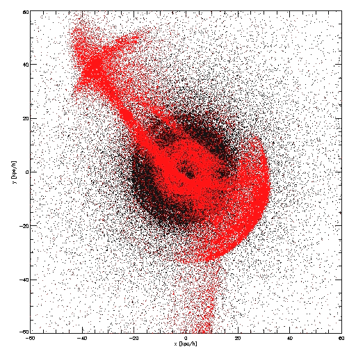

Sutirtha Mukherjee
Outer Stellar Halos of Galaxies from Field to Cluster Environment  This work covers a broad range of topics, starting from the diffuse stellar component in galaxy clusters (see Remus et al., 2017), where the velocity and density distributions of the BCGs and the diffuse component were analyzed, over global radial stellar halo properties (see Remus et al., 2016 for a study about the shape of the global outer stellar halos featuring Einasto density profiles and Forbes & Remus 2018 for a comparison of the metallicity gradients of observed globular cluster systems and simulated accreted galaxy components) to outer stellar halo kinematics (see Schulze et al., 2020). These studies were performed using the Magneticum Pathfinder simulation set, as this provides large enough statistics from galaxy clusters down to galaxy scales. Additionally, we used isolated merger simulations to understand where the mass from different progenitor galaxies is deposited ( Karademir et al., 2019) , and to trace the origin of different features like streams, umbrellas and shells back to their original merger configurations. These isolated merger simulations also provided an opportunity to search for signatures of major merger events which can be observed, for example the σ-bump (see Schauer et al., 2014). These features can then be observed using tracer populations at large radii, for example globular clusters, as is done with the SLUGGS survey. |
{kind=link}
Last update 27.01.2021 by Sutirtha Mukherjee